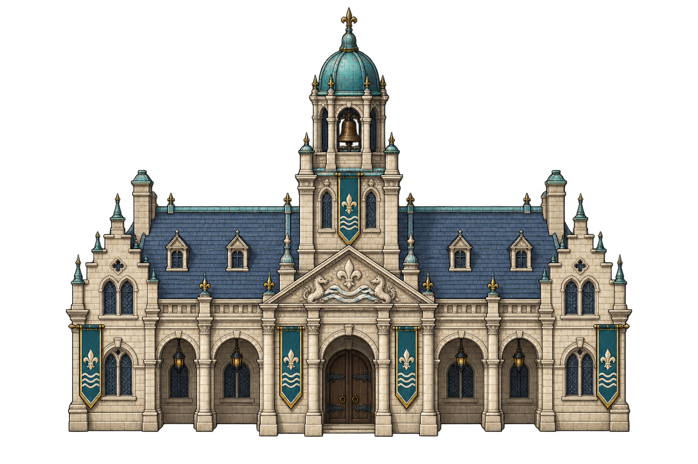
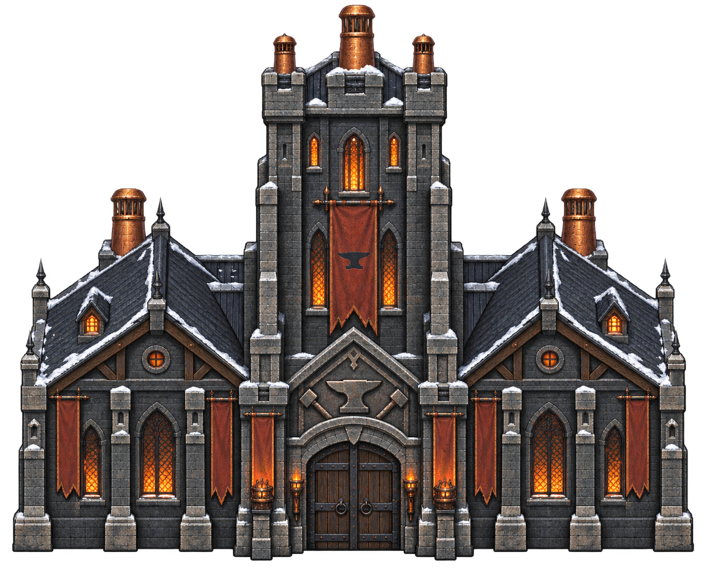
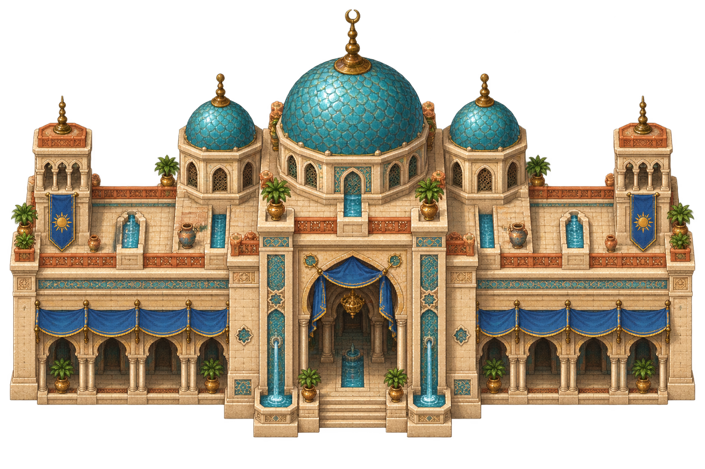
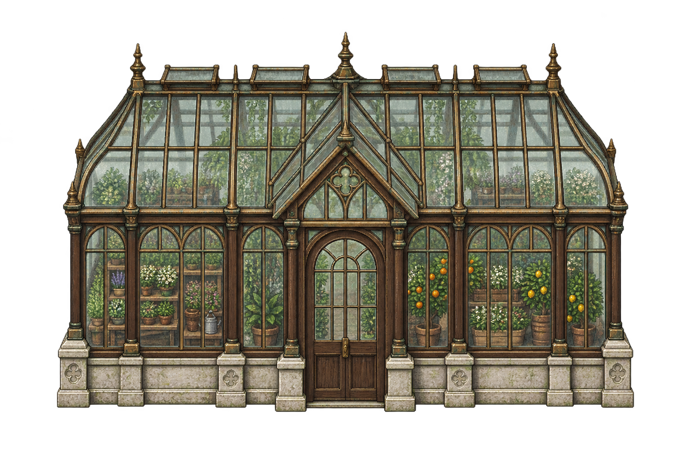

town_briarbridge_bridge_court_grand
Three new signature institutions and Moonspire?s botanical glasshouse. Seven town landmarks use a larger silhouette and wider frontage, with named forecourts and regional planting. Reflecting ponds remain deferred where they would obstruct circulation.
Original building library ? Prompts, originals and import

town_briarbridge_bridge_court_grand

town_ironvale_forge_keep_grand

town_embermarket_sun_court_grand

town_moonspire_botanical_glasshouse
Review captures are linked from the capture notes.